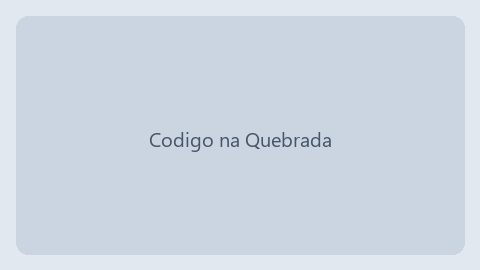

Três frentes complementares, todas gratuitas para o participante e sustentadas por doações
individuais e parcerias empresariais. Abaixo você encontra o detalhamento de cada iniciativa,
as campanhas de doação em andamento e as vagas abertas de voluntariado.
Iniciativas em andamento
Código na Quebrada

Turma 2025.2 do núcleo Jardim São Marcos.
O que é
Trilha de 9 meses em desenvolvimento web (HTML, CSS, JavaScript e versionamento),
com 6 horas semanais presenciais e notebook emprestado durante todo o curso.
Quem atende
Jovens de 16 a 24 anos matriculados ou egressos da rede pública de ensino.
Turma noturna com serviço de acolhimento infantil no mesmo espaço.
O que é
Curso de informática essencial e serviços digitais públicos (Gov.br, agendamento de saúde,
currículo online), com acolhimento infantil durante as aulas.
Quem atende
Mães e responsáveis com filhos menores de 12 anos, sem restrição de idade.
Resultados em 2025
84 participantes formadas;
2 turmas noturnas com acolhimento infantil;
96% de avaliação positiva na pesquisa de satisfação.
Toda doação é direcionada ao custeio direto das turmas. Você pode escolher um projeto específico
ou deixar que o instituto aplique onde houver maior necessidade no trimestre.
O que cada valor custeia
Equivalência entre valor doado e custeio mensal por estudante
Valor mensal
Destinação
Alcance
R$ 50
Auxílio-transporte
1 estudante por mês
R$ 120
Material didático e lanche
1 turma por semana
R$ 400
Manutenção de notebooks emprestados
10 equipamentos por mês
Formas de contribuir
Doação recorrente: débito mensal automático, cancelável a qualquer momento;
Doação pontual: Pix, boleto ou cartão, com recibo emitido em até 5 dias úteis;
Doação de equipamentos: notebooks e monitores em funcionamento, com no máximo 6 anos de uso.